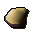
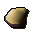
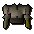
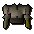

")
Zirkus Balthasar Beauregard
Nur RuneScape-Mitglieder können den Zirkus betreten. Bitte werdet Mitglied, damit ihr auf dieses Feature zugreifen könnt.
Einführung

Doch leider fehlt es dem Zirkus an Artisten und das Publikum wird langsam ungeduldig. Wollt ihr euer Leben, eure Knochen und höhnisches Gelächter riskieren und die gaffende Menge unterhalten?
Voraussetzungen
Um im Zirkus Balthasar Beauregard aufzutreten, muss man keine speziellen Anforderungen erfüllen, doch je höher eure Stufe in Gewandtheit, Magie oder Fernkampf, desto fantastischer die Belohnungen, die ihr erlangen könnt.
Erste Schritte

Wo sich der Zirkus gerade befindet erfahrt ihr von den Zirkusschreiern, die sich an beliebten Orten in allen größeren Städten und Dörfern aufhalten. Ihr könnt natürlich auch nach dem Symbol für Ablenkungen auf der Weltkarte umsehen.
 Wenn ihr irgendwo das Zelt des Kartenverkäufers seht, klickt darauf. Ihr bekommt dann eine goldene Karte ausgehändigt und werdet in die Manege teleportiert, wo der erstaunlich große, laute und imposante Zirkusdirektor euch in Empfang nimmt. Vorhang auf für Balthasar Beauregard, das wahrscheinlich brillanteste und bombastischste Individuum, dem ihr je begegnen werdet.
Wenn ihr irgendwo das Zelt des Kartenverkäufers seht, klickt darauf. Ihr bekommt dann eine goldene Karte ausgehändigt und werdet in die Manege teleportiert, wo der erstaunlich große, laute und imposante Zirkusdirektor euch in Empfang nimmt. Vorhang auf für Balthasar Beauregard, das wahrscheinlich brillanteste und bombastischste Individuum, dem ihr je begegnen werdet. 
Jede Art von Kunststück, die ihr vorführt, wird euch Erfahrung in der entsprechenden Fertigkeit einbringen, die mit den EP für andere Trainingsmöglichkeiten vergleichbar ist. Alles, was ihr an Ausrüstung benötigt, bekommt ihr vom Zirkus gestellt. Ihr solltet daran denken, dass das Publikum euch vermutlich mehr schätzt (und euch höhere Belohnungen erwarten), wenn ihr eure Vorstellung mit einigen Gesten auflockert und ein Kostüm tragt.
Es gibt drei verschiedene Vorführungen, in denen ihr mitwirken könnt:
- Magie
Bei der Magie-Darbietung müsst ihr mit ein paar einfachen Tricks die unglaublich naiven Zuschauer beeindrucken. - Fernkampf
Mit scharfen Gegenständen nach einer Person auf einer Drehscheibe zu werfen, war schon immer ein wichtiger Bestandteil jeder Zirkusvorführung. Versucht, so gut zu zielen, dass die Assistentin - und das Publikum - danach noch heimlaufen können. - Gewandtheit
Hoch über Balthasars Kopf ist ein Seil gespannt, das geradezu danach schreit, dass jemand darüber läuft, Räder schlägt und in die Tiefe... oder einfach Schlingchillas jongliert.
Magie-Darbietung

- Die nordöstliche Ecke ist für Alchemie- und Teleport-Zauber reserviert.
- Elementare Zauber kann man in der nordwestliche Ecke sprechen.
- Für Schwebe-Zauber steht die südöstliche Ecke zur Verfügung.
Eine Show besteht aus zehn Zauberkunststücken. Hört darauf, was das Publikum sich wünscht, und beachtet die empfohlene Stufe in Magie, die ihr für ein bestimmtes Objekt benötigt (diese seht ihr, wenn ihr eure Maus über den Gegenstand bewegt). Wenn ihr ab und zu Gesten in die Vorstellung einfließen lasst, fühlen sich die Zuschauer besser unterhalten und ihr könnt eure Punktzahl steigern.
Fernkampf-Darbietung

Wenn ihr die gewünschte Waffe handhabt, könnt ihr die Entfernung auswählen, aus der ihr schießen wollt. Dazu müsst ihr nur auf die mit Sternen oder Vögeln markierten Schießstände auf dem Boden klicken. Wie immer solltet ihr den Schwierigkeitsgrad variieren und einige Gesten einbauen, um eure Punktzahl zu steigern.
Seiltanz

Bedient euch aus der Truhe mit Jonglierutensilien, die oben am Mast steht. Schon seid ihr bereit für euren atemberaubenden Hochseilakt und müsst nur noch aufs Seil steigen. Während ihr auf dem dünnen Seil balanciert, könnt ihr aus dem Ausrüstungsfenster Tricks auswählen, die nach Schwierigkeitsgrad geordnet sind.
Ihr müsst während eurer Vorführung zehn Tricks zeigen. Wenn ihr dazwischen ein paar Gesten einwerft, eure Bewegungen nicht wiederholt und den Wünschen des Publikums nachkommt, erwarten euch fantastische Belohnungen.
Belohnungen
Am Ende jeder Darbietung wird euch Balthasar Beauregard mitteilen, wie gut ihr euch angestellt habt, und euch eine Belohnung zukommen lassen. Die Belohnung hängt von eurer Punktzahl ab, also solltet ihr neue Dinge ausprobieren und eure Fertigkeitsstufen so hoch trainieren, dass ihr euch nicht wiederholen müsst. Euch wird vielleicht auffallen, dass der Geschmack des Publikums von dem Ort abhängt, wo der Zirkus gerade gastiert. Experimentiert also ein wenig und findet heraus, welche Kunststücke eure momentanen Zuschauer am meisten amüsieren.
Hier seht ihr eine Übersicht über alle Gegenstände, die ihr erhalten könntet:
| Punkte | Kostüme |
| 1 - 500 |   
  
     
   
       Zuschauer-Garderobe für Damen und Herren |
| 501 - 1000 |         Akrobatenkleidung für Damen und Herren |
| 1001 - 1200 |      Clownkostüme |
| 1201+ |      Zirkusdirektorenkleidung |
Entwicklung
Entwicklung: Nancy J
Grafik: Wayne M, Giuseppe G, Matthew N, Matthew S, James W, Daniel J
QS: Chris L, Chris E
Audio: Grace D

Weitere Artikel in Spaß für zwischendurch
|
|
|
Weiterführende Informationen Wenn euch dieser Artikel nicht weitergeholfen hat, könnt ihr in den folgenden Kapiteln der RuneScape-Webseite mehr Informationen finden:
|
|